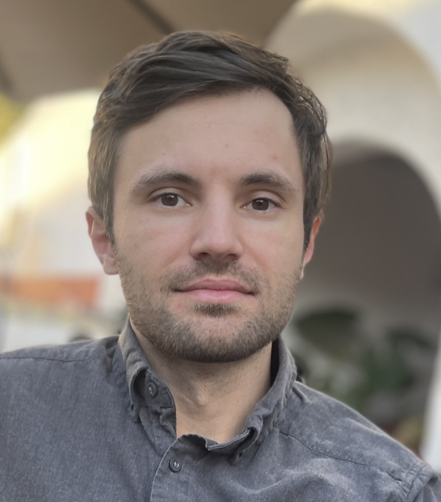

I am a mathematician working in random matrix theory.
From 2019 to 2023 I was a SEW Visiting Assistant Professor at UC San Diego (Department of Mathematics). My sponsor was Todd Kemp. Before coming to UCSD, I was a postdoc in the research group of László Erdős at the Institute of Science and Technology Austria (2016-2019). I did my PhD at Institut de Mathématiques de Toulouse under the supervision of Mireille Capitaine and Michel Ledoux.
E-mail: first name dot last name at gmail dot com
Probability theory; random matrices; universality phenomena in random matrix theory; free probability; applications of random matrix theory in mathematical physics.
Johannes Alt, László Erdős, Jacob Fronk, Brian Hall, Ching Wei Ho, Todd Kemp, Torben Krüger
2022 - 2023 Fall MATH 180A: Introduction to Probability MATH 10C: Calculus III Winter MATH 180A: Introduction to Probability Spring MATH 180C: Introduction to Stochastic Processes II
2021 - 2022 Winter MATH 142A: Introduction to Analysis I MATH 285: Stochastic Processes Spring MATH 180C: Introduction to Stochastic Processes II Lecture A00 Lecture B00
2020 - 2021 Fall MATH 180A: Introduction to Probability MATH 180C: Introduction to Stochastic Processes II Winter MATH 180A: Introduction to Probability MATH 142A: Introduction to Analysis I
2019 - 2020 Fall MATH 180A: Introduction to Probability Winter MATH 180B: Introduction to Stochastic Processes I Spring MATH 180C: Introduction to Stochastic Processes II
| 2012-2016 | PhD in Applied Mathematics, University of Toulouse 3, France | |
| 2011-2012 | Master in Probability and Statistics, University Paris-Sud 11, Orsay, France | |
| 2010-2011 | Master of Advanced Studies in Mathematics, University of Cambridge, UK | |
| 2009-2011 | MSc in Mathematical Statistics, Lviv National University, Ukraine | |
| 2007-2008 | MA in Banking, Lviv National University, Ukraine | |
| 2005-2009 | BSc in Mathematics, Lviv National University, Ukraine | |
| 2003-2007 | BA in Economics, Lviv National University, Ukraine | |
In 2021-2022 I organized the Probability Seminar at UC San Diego. The seminar website can be found here.